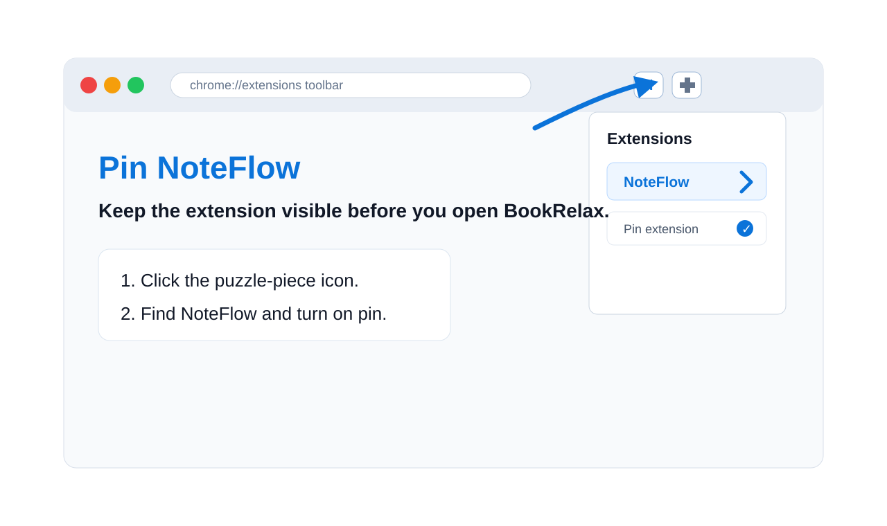
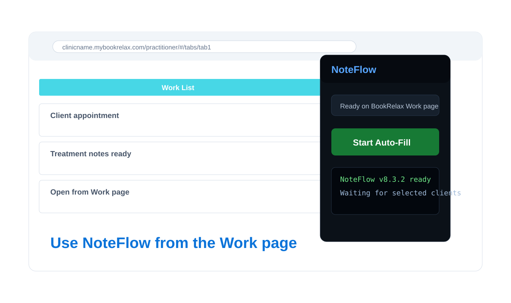

How to Install the NoteFlow Chrome Extension
Use this guide if you are new to Chrome extensions and want to install NoteFlow for BookRelax treatment notes.
Open NoteFlow on Chrome Web Store Already Installed? View Setup GuideStep 1: Open the Chrome Web Store
Open the NoteFlow listing in Google Chrome. The extension is built for BookRelax treatment notes and massage SOAP note workflows.

Step 2: Click Add to Chrome
On the Chrome Web Store page, click Add to Chrome, then confirm Add extension. After installation, Chrome will add NoteFlow to your extensions list.
Step 3: Pin NoteFlow
Click the puzzle-piece icon in Chrome, find NoteFlow, and pin it to the toolbar. This makes it easy to open while using BookRelax.
Step 4: Open BookRelax
Go to your supported mybookrelax.com practitioner Work page. NoteFlow works on supported BookRelax pages and does not run on unrelated websites.

Step 5: Continue Setup
After installation, review the privacy notice, create your treatment note templates, and then start auto-fill from the BookRelax Work page.
Continue to Setup Guide